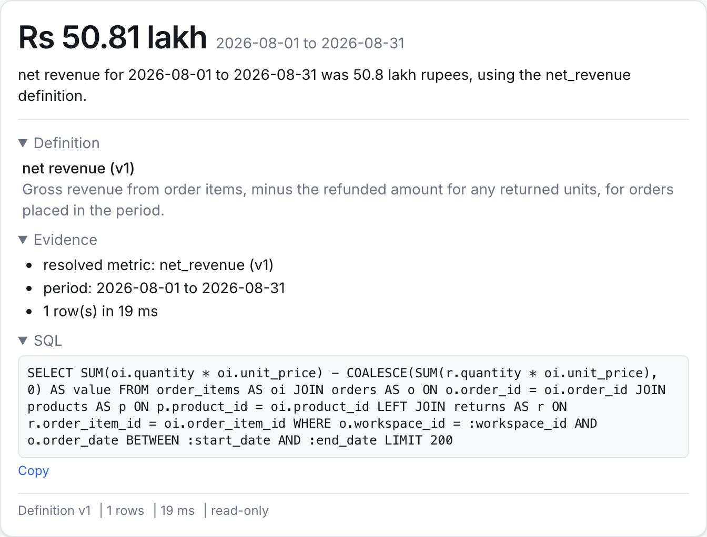
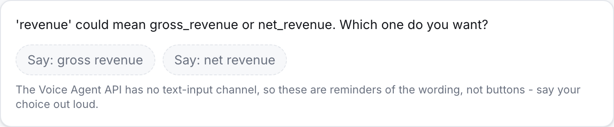
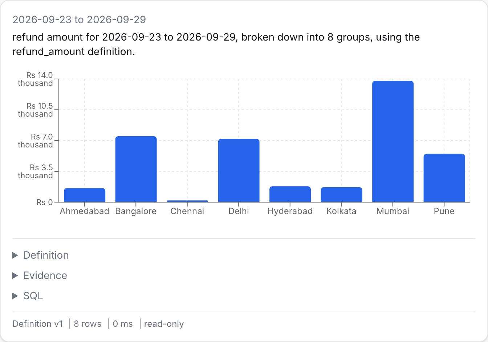
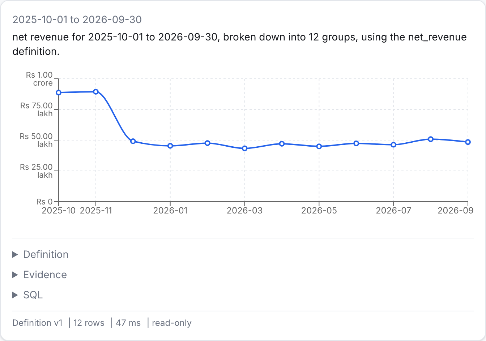
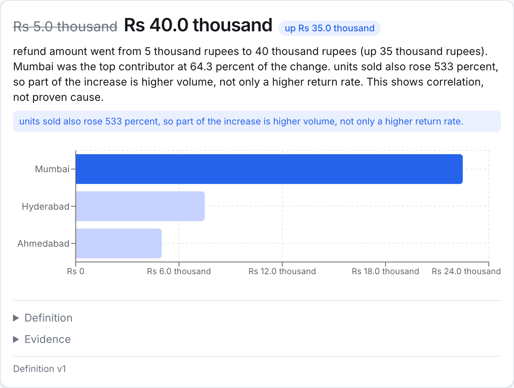
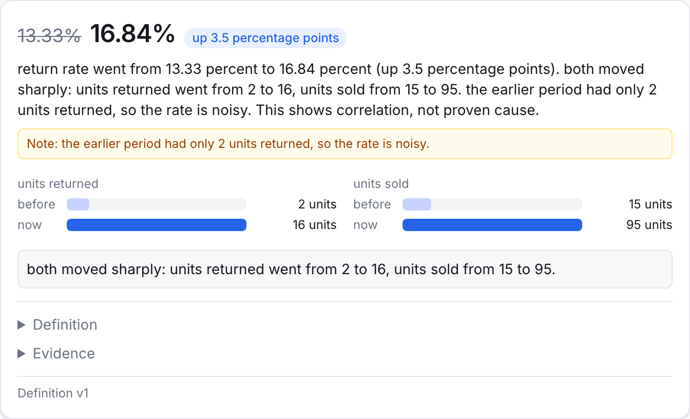
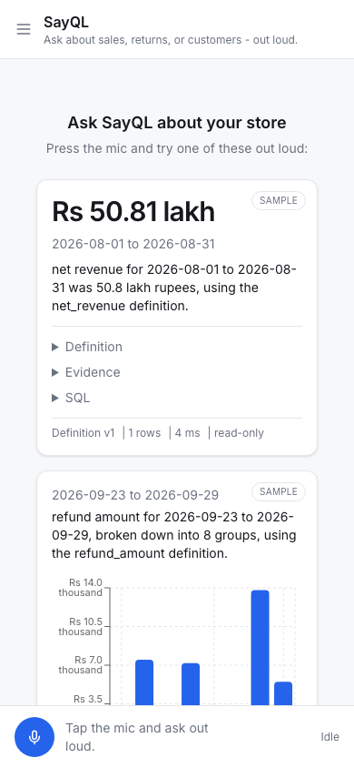

SayQL is a voice analyst for a small D2C store owner - someone who has sales and returns data but no analyst to ask it questions. You ask out loud, it answers in speech, and the screen always shows which definition it used. It is live at sayql.onrender.com and the full source is on GitHub.
Problem
The same question can mean two different numbers.
Dashboards and plain voice-to-SQL just answer. They do not know a business term has more than one valid definition - so they guess, silently.
"Revenue", August 2026 - gross
Rs 53.82 lakh
"Revenue", August 2026 - net
Rs 50.81 lakh
Same word, same month
Rs 3.01 lakh gap
Nobody can trust a number they cannot see the definition of.
Owners ask "what was our revenue last month" all the time. The problem is that revenue can mean gross or net, and most tools just pick one and answer. In our own demo data, gross revenue for August is 53.82 lakh and net revenue is 50.81 lakh - a 3 lakh rupee gap for the exact same question. If the tool cannot tell you which one it used, you cannot trust the number.
Solution
Ask in words. Answer in code you can check.
SayQL never lets the model guess a business term or compute a number itself. It resolves a definition, computes in deterministic code, and explains with evidence.
1. Ask spoken question
->
2. Resolve definition metrics.yaml
->
3. Compute in code SQL, validated, read-only
->
4. Explain with evidence definition + SQL shown
The flow is always the same: the owner asks a question out loud, SayQL resolves the business term against a versioned metric dictionary, computes the answer in deterministic Python and SQL - never in the model's head - and then explains the result with the definition, the SQL, and the evidence behind it, visible on screen.
Moment 1 - KPI
Every number states its own definition.

"What was net revenue last month?"
Net revenue for August 2026 was Rs 50.81 lakh, spoken as "50.8 lakh rupees" - using the net_revenue v1 definition. The exact SQL that produced it is one tap away.
The definition is versioned - v1, not just a name
The SQL behind it is read-only, every time
Cards rendered from real tool outputs; the live demo triggers them by voice.
Ask "what was net revenue last month" and you get a spoken number plus a card that shows exactly which definition it used, the evidence behind it, and the read-only SQL that ran - open by tapping. Nothing here is summarized by the model; the card is the same JSON payload the tool returned.
Moment 2 - Ambiguity
It asks instead of guessing.

"What was our revenue last month?"
"Revenue" is deliberately undefined. SayQL asks one short question back instead of picking a side. The options on screen are reminders of the wording, not buttons - there is no text-turn message in the Voice Agent API, so the answer has to be spoken.
Cards rendered from real tool outputs; the live demo triggers them by voice.
This is the moment that shows SayQL's honesty. "Revenue" is not in the metric dictionary as a single term - it maps to two candidates, gross and net - so instead of guessing, it asks. Say "net revenue" out loud and it continues from there.
Moment 3 - Breakdown and trend
One dictionary, every shape of answer.
The same metric definitions drive a bar chart, a trend line, or a plain number - no new SQL written for each shape.

"What were returns last week by city?"

"Show me net revenue by month for the last year."
Cards rendered from real tool outputs; the live demo triggers them by voice.
Breakdown and trend are the same query_metric tool, just with a dimension or a grain added to the plan. The trend line also carries a planted story - the festive season bump from October and November - since the demo data is not just random noise.
Moment 4 - Why
It explains, and says what it does not know.

Additive: refund amount
Refund amount for Wireless Earbuds Pro went from Rs 5.0 thousand to Rs 40.0 thousand.
Mumbai
64.3%
Hyderabad
21.4%
Ahmedabad
14.3%
It also refuses to overclaim: units sold rose 533% too, so part of the jump is volume, not only a higher return rate.

Ratio: return rate
Return rate rose from 13.33% to 16.84% (up 3.5 percentage points). SayQL flags it: the earlier period had only 2 units returned, so the rate is noisy - a low_base warning, not a hidden number.
Cards rendered from real tool outputs; the live demo triggers them by voice.
This is the differentiator: SayQL does not just find a top contributor, it checks whether the finding is trustworthy. Mumbai drove most of the returns increase, but volume also jumped, so that caveat is spoken too. For the ratio version, the base was too small to trust - 2 units - so it says so instead of stating a clean percentage like it means something.
How AssemblyAI is used
One WebSocket does speech, language, and tool calls.
Server mints a 60 second token per session - the AssemblyAI API key never reaches the browser.
Barge-in resets the playback schedule the instant the caller talks over a reply.
tool.result is only sent after reply.done, per the Voice Agent API's own tool-calling rule - not immediately on tool.call.
The entire voice loop, speech in, language understanding, tool calls, speech out, runs over one AssemblyAI Voice Agent WebSocket. FastAPI's only job in that loop is minting a short-lived token so the real API key never reaches the browser, and relaying tool calls to this backend's own endpoints. Barge-in and the reply.done rule for tool results both came from testing against the real protocol, not just reading the docs.
Architecture
Two boxes touch the model. The rest is code you can read.
Numbers are computed once, in Python, and formatted once, in app/format.py. The model only ever reads a pre-formatted spoken string back.
Only two boxes in this pipeline are the model: understanding the spoken question, and speaking the final answer. Everything between - resolving the metric, building the query plan, compiling it to SQL, validating it with sqlglot, executing it read-only, and running the analysis - is deterministic Python you can read in this repo. That is what makes the numbers checkable.
Trust and accuracy
The bug that taught us not to trust the model with numbers.
BeforeGross revenue was Rs 53.82 lakh. The agent spoke "five lakh thirty eight thousand rupees" - about 10 times too small. The model was converting the raw number itself.
FixRaw numbers were removed from everything the model sees. It now only reads pre-formatted spoken strings from model_payload, and is told never to compute or round a number itself.
automated tests passing
orders in the seeded demo data
returns tracked in the demo data
Accuracy eval: not yet run. evals/results.md does not exist yet - scripts/build_slide_numbers.py will pick it up once it does.
This bug is the reason model_payload exists. Early on, the agent spoke a gross revenue number that was off by about 10 times, because it was converting the raw figure itself instead of reading a pre-formatted string. The fix was structural: the model never sees a raw number again. These test and data counts come straight from this repo, not from a slide I typed by hand - and the accuracy eval is honestly marked as not run yet.
Business value and what is next
Ask works today. Analyze, Explain, Detect, Alert, Act are the roadmap.
Today LIVE
Ask: KPI, breakdown, trend, and why-with-evidence answers, spoken and on screen
A versioned metric dictionary, not freehand SQL
CSV ingestion into the same schema
Single-round explain_change: one dimension, one comparison
Roadmap NOT BUILT
Analyze: compare several dimensions at once, chain follow-up questions
Explain: propose the next question instead of waiting for it
Detect: a scheduled job that flags a change worth asking about
Alert and Act: notify outside the app, then trigger a real action
Shopify / WooCommerce connectors, auth and per-tenant isolation
Today, SayQL answers Ask-stage questions end to end, with CSV ingestion already working and a basic why-card. Analyze, Explain, Detect, Alert and Act are the intended roadmap in docs/roadmap.md, in that order - none of them are built yet, and I want to be upfront about that rather than implying otherwise.
Try it
Say four sentences. See the definition behind every one.
sayql.onrender.com

"What was net revenue last month?"
"What were returns last week by city?"
"What was our revenue last month?"
"Why did returns go up for the Wireless Earbuds Pro this month?"
Use headphones or a quiet room - open speakers can make the agent hear itself. Demo is rate-limited to 8 voice sessions per connection per 10 minutes, 300 total per day.
Scan the code or go to sayql.onrender.com, allow the microphone, and say these four sentences one at a time. Headphones help since open speakers can confuse the agent by playing its own voice back to it. That is the whole pitch: ask like a person, get an answer you can check.